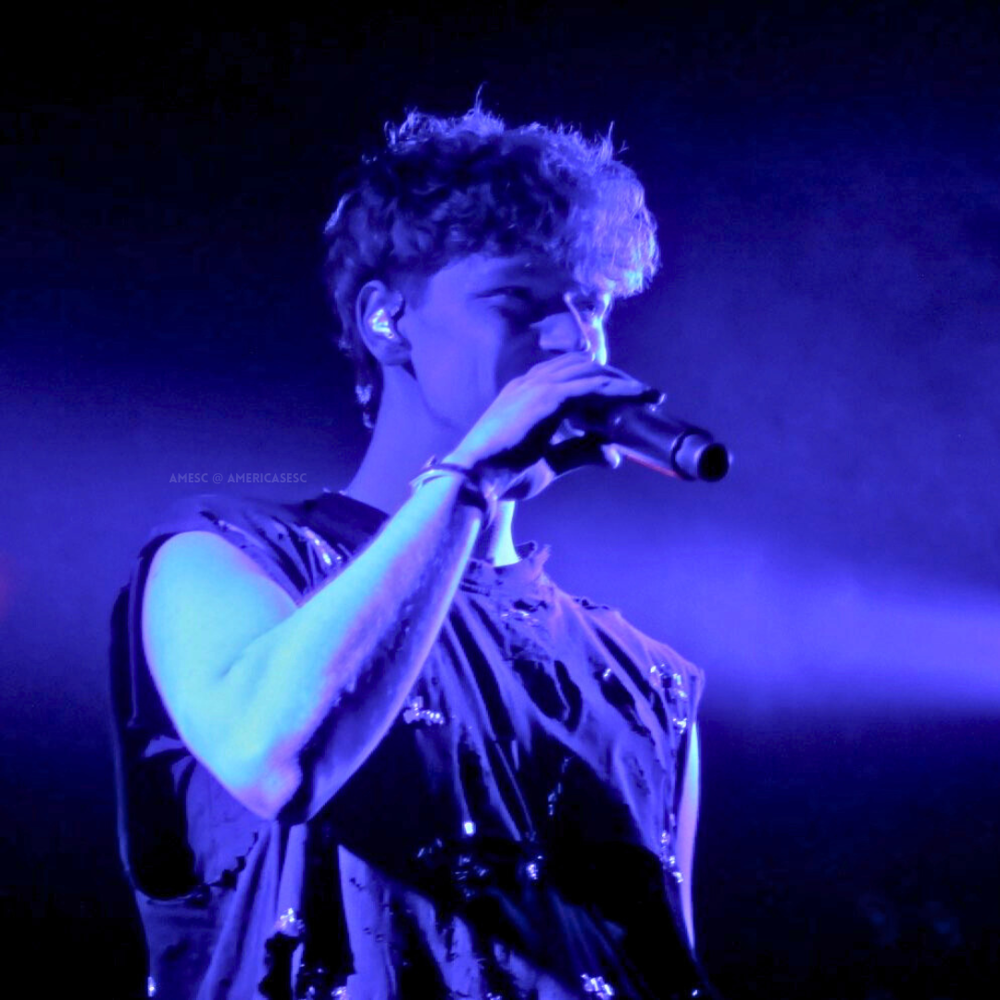

Jann Toronto: Concert Review
by Star, Ry, Dan - March 13, 2025

On March 1st, 2025, members of the AMESC team gathered at Annabel’s, a cozy music hall in Toronto overlooking Lake Ontario. A hubbub of voices waited for us inside, after we rushed to the venue to escape the cold. Polish, English, and French speakers whispered in anticipation, some with signs or tour shirts for the main act. Half an hour after the opener, smoke wafted across the venue, and at 9pm, Jann took the stage.
Two years after the 2023 Polish national finals, Jann has been achieving career milestone after milestone: garnering a large fanbase, songs reaching millions of streams, touring, playing major festivals, opening for Madison Beer, releasing his first album, and as of recently, just having wrapped up his first North American tour. The 26-year-old blends his impressive skills as a songwriter, music producer, vocalist, opera singer, actor, artist, and dancer to deliver one of the most artistic performances our team has ever experienced. His experimentations with genres, attention to detail, and ability to be so open with his self expression with the audience make him such a distinct performer. Jann’s passion for his craft shows in every performance and work he presents.
The setlist seems to be organised by the five stages of grief, at least very loosely to keep the energy level balanced with the audience. He opened the concert with Nostalgia and Met the God, two tracks that use sarcasm to mock the denial of a situation. He subsequently transitioned towards songs with more prominent themes of anger, bargaining, depression and acceptance, with the order varying to keep the mood of the overall performance balanced. The concert is not just a showcase of his vocal abilities as a singer, but also a performance art and introduction to Jann himself, his thoughts, his fear, his past, pain, anger, and how he views the world. His work is so personal and raw, yet balanced between high energy and moodier ballads.
Among the team attending, here were our favorites:
Ry: Eren. This was a song that was recommended to me in 2022, back before Jann was even on my radar, and the full circle moment of discovering him to having him close the show with it was magical. So much had happened between the day I saved Eren and the day I saw it live, and throughout, Jann’s music wove itself through my journey. In 2023, LOOKATME accompanied me to my first real job, and in 2024, Kisskiss soundtracked my last semester of undergrad. The atmosphere on stage for Eren was stunning - there’s nothing like the end of a show knowing you’d not only witnessed something spectacular, but felt it with everyone else in the room.
Dan: Nostalgia. It’s really hard to choose one favourite, but I think the opening performance of Nostalgia stuck with me the most. The whole performance was very emotionally charged, ranging from the trauma and pain in songs like Nostalgia and Do You Wanna Come Over, the flirtiness and confidence of Kisskiss and Charisma, and the powerful upbeat melodies of Gladiator and Smile. Saving Gladiator for an encore performance proved to be an excellent choice— while the crowd was eager to sing along to several songs, the excitement upon Jann and his band’s return to the stage only fed the crowd’s energy more as they screamed along to every word. Nostalgia itself served as an introduction to what was to come, being a fairly chill song by sound and yet a powerful song lyrically, with the dim lighting and heavy smoke setting the mood perfectly as Jann sings about carrying on amidst all a rather turbulent youth. All in all, opening with Floating and easing into Nostalgia was a gentle yet strong introduction for the rollercoaster that was to come, setting the tone for a captivating show all around.
Star: Arachnophobia. The performance perfectly captured all of his abilities at once, and is such a vulnerable display of emotions despite the simplicity of the lyricism. It’s a showcase of Jann’s songwriting and music production abilities. The ambient and electr onic production perfectly capture that “numb” dissociated feeling, and his choice of vocals to reflect the emotions is a sharp kick to the feels, illustrating every sensation through vocals, words, and music. The studio production had already stunned so many listeners, but Jann makes sure to really elevate the song in all ways possible live; the piano melody creating the false sense of calm, the sudden shock with discovering the spider, his movements becoming more tense to describe his fear of the spider, and then slowly throughout the song, his movements showing him becoming the spider. At this point, it becomes clear that the “spider” is a metaphor, possibly for a panic attack or breakdown, with the literal spider being mentioned used to redirect the listener from the build up for the aforementioned panic attack/breakdown. Jann’s skill for narrative performance is spotlighted the most as he lets loose and creates imagery for the audience with the use of dance and display of emotions, both vocally and with his use of body language.
Jann uses a wide array of genres and emotions, and succeeds in switching effortlessly between deeply moody songs to very sassy, flirty, high-energy performances, or even just displaying a multiple spectrums of anger, frustration or despair. Sarcasm and frustration in “Nostalgia”, betrayal and loss in “Promise”, exhaustion and loneliness in “Need a break”, and parental trauma in “The Letter” are excellent examples of devastating emotions being portrayed in a variety of powerful ways. Other songs, despite being high energy songs, are still all so different in tone. Some address frustrations and anger, while some are dripping with sarcasm. There are different variations of despair, high energy, and theatricality in these performances, and the climaxes of each song are much more than just breaking into a high note; he’s communicating these emotions and experiences with the audience. Despite the fact that he is standing in one place for the moodier songs, the performances are anything but static. Jann put meaning into every word and motion, narrating the songs with more than just his words. He knows what the audience wants and uses it to rile up the crowd, yet at the same time, masters control over his performance.
Later, Jann posted on Instagram: “[It was] amazing. I think this was my best and favorite show of all time so far. I know, big words, but [I] just felt so at ease, so comfortable with my voice, even though [I] made a few mistakes, the crowd was amazing, I had so much fun singing Smile, actually. I don’t know what else to say, it was just so amazing.” Our team can definitely say we enjoyed the show just as much as he did, and we’re proud to say we started the ‘Encore!’ chants that led to a very special surprise.
Jann is more than just a performer; he is an artist in his own right, prioritising self expression in every aspect of his craft to deliver and unafraid to experiment and be unapologetically himself. His songs are labours of love and most definitely worth checking out if you haven’t already! In all, we look forward to his future projects, and hope his first North American tour will not be his last.
On March 1st, 2025, members of the AMESC team gathered at Annabel’s, a cozy music hall in Toronto overlooking Lake Ontario. A hubbub of voices waited for us inside, after we rushed to the venue to escape the cold. Polish, English, and French speakers whispered in anticipation, some with signs or tour shirts for the main act. Half an hour after the opener, smoke wafted across the venue, and at 9pm, Jann took the stage.
Two years after the 2023 Polish national finals, Jann has been achieving career milestone after milestone: garnering a large fanbase, songs reaching millions of streams, touring, playing major festivals, opening for Madison Beer, releasing his first album, and as of recently, just having wrapped up his first North American tour. The 26-year-old blends his impressive skills as a songwriter, music producer, vocalist, opera singer, actor, artist, and dancer to deliver one of the most artistic performances our team has ever experienced. His experimentations with genres, attention to detail, and ability to be so open with his self expression with the audience make him such a distinct performer. Jann’s passion for his craft shows in every performance and work he presents.
The setlist seems to be organised by the five stages of grief, at least very loosely to keep the energy level balanced with the audience. He opened the concert with Nostalgia and Met the God, two tracks that use sarcasm to mock the denial of a situation. He subsequently transitioned towards songs with more prominent themes of anger, bargaining, depression and acceptance, with the order varying to keep the mood of the overall performance balanced. The concert is not just a showcase of his vocal abilities as a singer, but also a performance art and introduction to Jann himself, his thoughts, his fear, his past, pain, anger, and how he views the world. His work is so personal and raw, yet balanced between high energy and moodier ballads.
Among the team attending, here were our favorites:
Ry: Eren. This was a song that was recommended to me in 2022, back before Jann was even on my radar, and the full circle moment of discovering him to having him close the show with it was magical. So much had happened between the day I saved Eren and the day I saw it live, and throughout, Jann’s music wove itself through my journey. In 2023, LOOKATME accompanied me to my first real job, and in 2024, Kisskiss soundtracked my last semester of undergrad. The atmosphere on stage for Eren was stunning - there’s nothing like the end of a show knowing you’d not only witnessed something spectacular, but felt it with everyone else in the room.
Dan: Nostalgia. It’s really hard to choose one favourite, but I think the opening performance of Nostalgia stuck with me the most. The whole performance was very emotionally charged, ranging from the trauma and pain in songs like Nostalgia and Do You Wanna Come Over, the flirtiness and confidence of Kisskiss and Charisma, and the powerful upbeat melodies of Gladiator and Smile. Saving Gladiator for an encore performance proved to be an excellent choice— while the crowd was eager to sing along to several songs, the excitement upon Jann and his band’s return to the stage only fed the crowd’s energy more as they screamed along to every word. Nostalgia itself served as an introduction to what was to come, being a fairly chill song by sound and yet a powerful song lyrically, with the dim lighting and heavy smoke setting the mood perfectly as Jann sings about carrying on amidst all a rather turbulent youth. All in all, opening with Floating and easing into Nostalgia was a gentle yet strong introduction for the rollercoaster that was to come, setting the tone for a captivating show all around.
Star: Arachnophobia. The performance perfectly captured all of his abilities at once, and is such a vulnerable display of emotions despite the simplicity of the lyricism. It’s a showcase of Jann’s songwriting and music production abilities. The ambient and electr onic production perfectly capture that “numb” dissociated feeling, and his choice of vocals to reflect the emotions is a sharp kick to the feels, illustrating every sensation through vocals, words, and music. The studio production had already stunned so many listeners, but Jann makes sure to really elevate the song in all ways possible live; the piano melody creating the false sense of calm, the sudden shock with discovering the spider, his movements becoming more tense to describe his fear of the spider, and then slowly throughout the song, his movements showing him becoming the spider. At this point, it becomes clear that the “spider” is a metaphor, possibly for a panic attack or breakdown, with the literal spider being mentioned used to redirect the listener from the build up for the aforementioned panic attack/breakdown. Jann’s skill for narrative performance is spotlighted the most as he lets loose and creates imagery for the audience with the use of dance and display of emotions, both vocally and with his use of body language.
Jann uses a wide array of genres and emotions, and succeeds in switching effortlessly between deeply moody songs to very sassy, flirty, high-energy performances, or even just displaying a multiple spectrums of anger, frustration or despair. Sarcasm and frustration in “Nostalgia”, betrayal and loss in “Promise”, exhaustion and loneliness in “Need a break”, and parental trauma in “The Letter” are excellent examples of devastating emotions being portrayed in a variety of powerful ways. Other songs, despite being high energy songs, are still all so different in tone. Some address frustrations and anger, while some are dripping with sarcasm. There are different variations of despair, high energy, and theatricality in these performances, and the climaxes of each song are much more than just breaking into a high note; he’s communicating these emotions and experiences with the audience. Despite the fact that he is standing in one place for the moodier songs, the performances are anything but static. Jann put meaning into every word and motion, narrating the songs with more than just his words. He knows what the audience wants and uses it to rile up the crowd, yet at the same time, masters control over his performance.
Later, Jann posted on Instagram: “[It was] amazing. I think this was my best and favorite show of all time so far. I know, big words, but [I] just felt so at ease, so comfortable with my voice, even though [I] made a few mistakes, the crowd was amazing, I had so much fun singing Smile, actually. I don’t know what else to say, it was just so amazing.” Our team can definitely say we enjoyed the show just as much as he did, and we’re proud to say we started the ‘Encore!’ chants that led to a very special surprise.
Jann is more than just a performer; he is an artist in his own right, prioritising self expression in every aspect of his craft to deliver and unafraid to experiment and be unapologetically himself. His songs are labours of love and most definitely worth checking out if you haven’t already! In all, we look forward to his future projects, and hope his first North American tour will not be his last.
Who Are We?
We're a group of Eurovision fans from the Americas, passionate about connecting European music to our local communities. Our team is made of content creators, translators, media editors, and more!
Join Us!